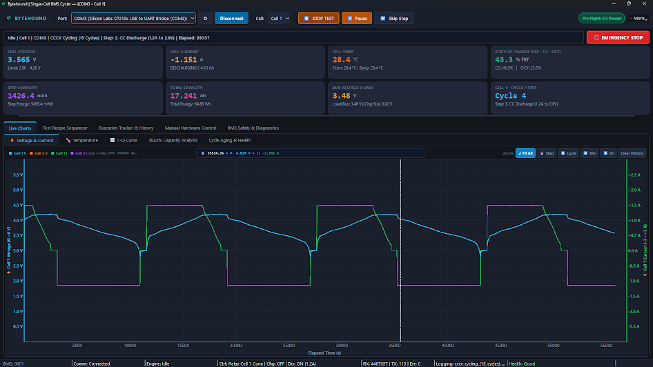
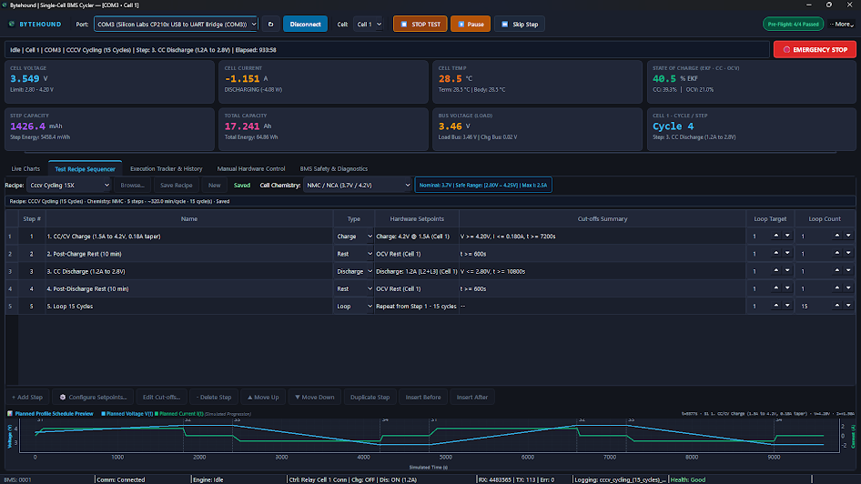
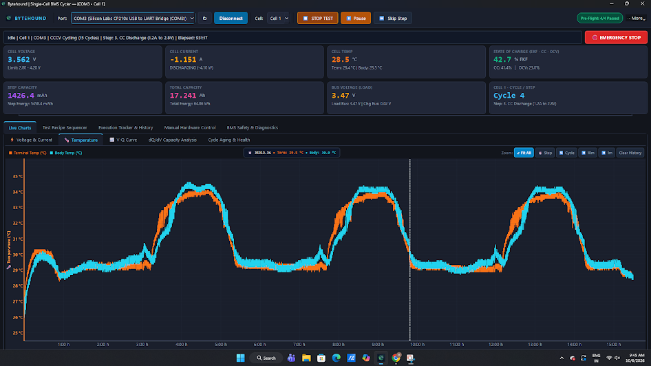
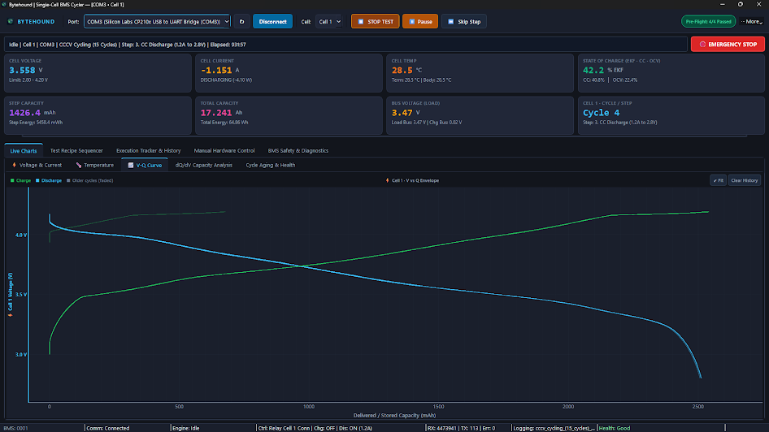
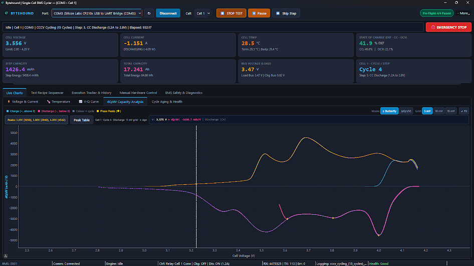
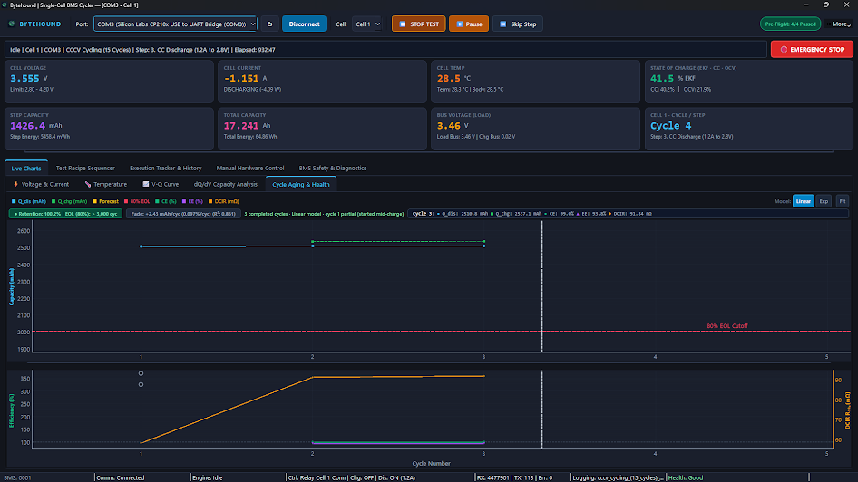
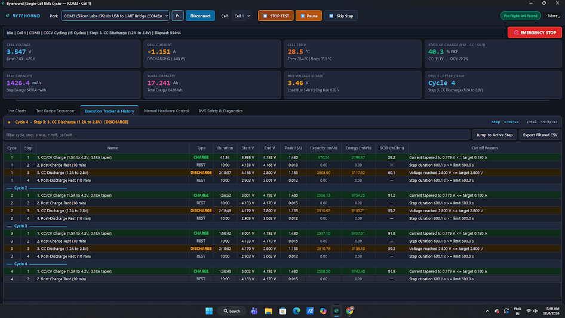
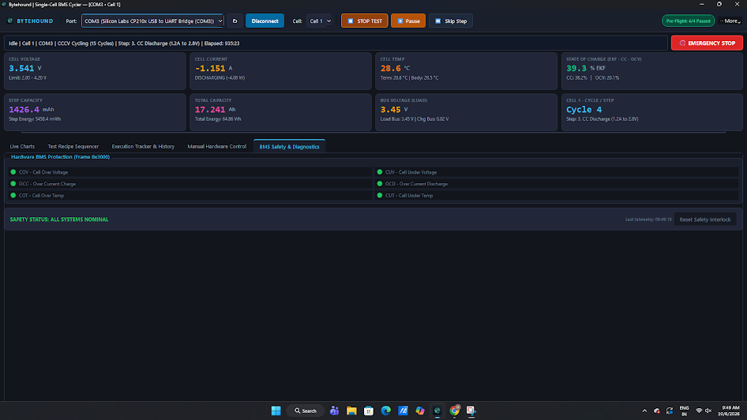
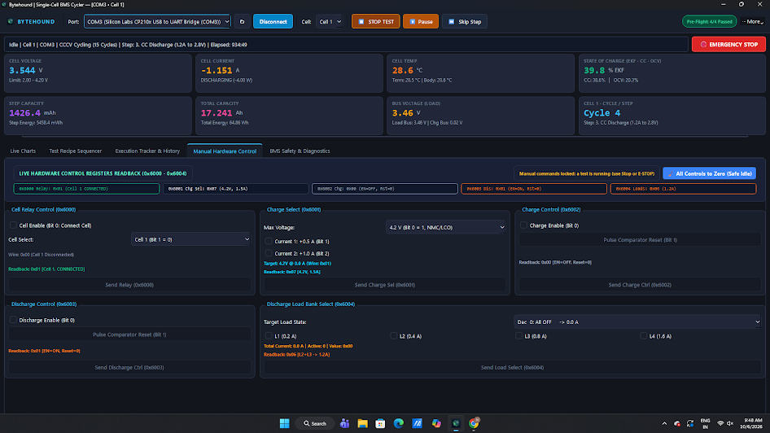
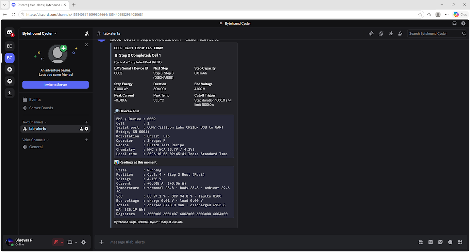

Single-Cell BMS Cycler: User Manual
How to connect the test bench, set up a test, run it safely, read the results and export the data. Follow the sections in order the first time; after that, use the Quick start and the Quick reference.
1. Before you begin ↑ top
What you need
- A Windows 10 or 11 PC with the cycler application installed.
- The BMS test board, connected to the PC by USB. It appears as a COM port.
- The cell (or cells) under test, wired to the board with the voltage sense leads and both temperature probes (terminal and body) attached.
- The cell's chemistry (NMC, LFP, LTO, Na-ion) and its rated capacity.
Starting the application
Open Single Cell BMS Cycler from the Start menu or the desktop shortcut. The window opens maximized. Everything starts switched off: no cell is connected and no current flows until you start a test or use manual control.
Only one cycler window can run on a PC. If you open a second one, it shows Cycler Already Running and closes. Use one PC per bench.
2. The main screen ↑ top
The window has five areas, top to bottom:
| Area | What it is for |
|---|---|
| ① Toolbar | Connect to the board, choose the cell, and start, pause, skip or stop the test. The ⋯ More menu holds baud rate, font size, pre-flight, export, report, webhook, event log and compact mode. |
| ② Run status row | One line showing state, cell, port, recipe, current step and elapsed time. The emergency stop button is always here. Warning and critical alarms appear just below it. |
| ③ KPI cards | Live numbers from the board. See section 8. Drag the divider under the cards to give the tabs more room. |
| ④ Tabs | The working areas: charts, recipe editor, step history, manual control and safety. |
| ⑤ Status bar | Connection, engine state, relay and drive state as read back from the board, packet counters, current log file, link health, and a clickable link to the last exported file. |
The window title shows the port and cell, for example Bytehound | Single-Cell BMS Cycler — [COM3 • Cell 1].

3. Quick start: your first test ↑ top
- Connect the hardware. Wire the cell and probes to the board, then plug the board's USB cable into the PC.
- Pick the port. In the toolbar, open Port and choose the board's COM port. If it is missing, click ↻ to refresh the list.
- Click Connect. The button changes to Disconnect, the KPI cards start updating, and after about 1.5 s the pre-flight badge shows a result such as
4/4 Passed. - Choose the cell. Set Cell to Cell 1 or Cell 2.
- Choose the recipe. Open the Test Recipe Sequencer tab, pick a recipe from the Recipe list, and check that Cell Chemistry matches your cell. No red warning banner should be showing.
- Click ▶ START TEST (or press Ctrl+Shift+S). The app re-runs the pre-flight check. If there are warnings it asks you to confirm; if a check fails, the test does not start.
- Watch it run. Use the Live Charts tab for traces and the Execution Tracker & History tab for completed steps.
- When it finishes, a Test Completed message appears. Click ⋯ More → Generate Test Report for a certificate, or Export Run Package for all data in a .zip file.
4. Connecting to the BMS ↑ top
- Port lists every serial port on the PC with its description. Click ↻ after plugging in a board.
- Baud rate is under ⋯ More → Baud rate. The default is
115200. Change it only if the board firmware uses a different rate. - Connect / Disconnect opens or closes the port. On disconnect, the app first switches off charge and discharge, removes the load and opens the cell relay, waiting for the board to confirm each step.
When the link is working, the status bar shows Comm: Connected, the RX counter increases, and Health: Good is shown in green.
| Health shows | Meaning | What to do |
|---|---|---|
Waiting for telemetry | The port is open but no data has arrived. | Check the port, the baud rate and that the board is powered. |
Attention | reconnects N | Packet errors or automatic reconnects have occurred. | Check the USB cable and avoid USB hubs. A few are harmless; a rising count is not. |
STALE (Ns) | No data for more than 5 s. A warning alarm is raised. | Check the cable and board power. If data stops for 8 s during a test, the test stops itself for safety. |
LOW DISK | Less than 1 GB free on the logging drive. A critical alarm is raised. | Free up space before running long tests. |
The status bar also shows BMS: …. This is the BMS serial/ID set in the webhook settings, or the USB adapter serial number or COM port if none is set.
5. Pre-flight check ↑ top
The pre-flight check runs automatically after you connect and again each time you press START. It only reads data; it never switches anything on. Click the ● Pre-Flight badge in the toolbar (or ⋯ More → Pre-flight Diagnostics) to see the full report.
| Check | Passes when | A failure usually means |
|---|---|---|
| Telemetry Link & Latency | Fresh data arrived within the last 1 s | Wrong port, wrong baud rate, or board not powered |
| Cell Sense Lead Voltage | Cell voltage is plausible and within the chosen chemistry's range | Sense lead loose or detached (reads ~0 V), wrong cell selected, or wrong chemistry chosen |
| Thermistor Parity & Health | Both probes read sensibly and agree within 4 °C | A probe is unplugged or open-circuit, or one probe is not on the cell |
| Idle MOSFET & Leakage Current | Current is within ±0.050 A while everything is off | A load or charger is still on, or the board has a leakage fault |
Each row is marked ● PASS, ▲ WARN or ✕ FAIL, with a measured value, the requirement and guidance on what to fix.
- All pass: the dialog offers Start Test Now.
- Warnings only: you may continue with Proceed Anyway after reading the remarks.
- Any failure: starting is blocked. Fix the issue and click ↻ Re-Run Sanity Check.
6. Recipes (test profiles) ↑ top
A recipe is the list of steps the cycler runs, such as charge, rest, discharge and rest, repeated N times. Recipes are edited in the Test Recipe Sequencer tab. Editing is locked while a test is running.
Loading a recipe
- Recipe list: the built-in recipes (below).
- Browse...: open a recipe
.jsonfile you saved earlier. - New: start from a simple two-step recipe (CC Charge, then a 5-minute Rest).
- Save Recipe: save the current recipe to a
.jsonfile. The label beside the buttons shows Saved or Unsaved changes.
| Built-in recipe | What it does |
|---|---|
| CCCV Cycling (15 Cycles) | CC/CV charge at 1.5 A to 4.2 V until the current tapers to 0.18 A, 10 min rest, CC discharge at 1.2 A to 2.8 V, 10 min rest; repeated 15 times. Selected by default. |
| CCCV Cycling (5 Cycles) | The same cycle, repeated 5 times. |
| Standard Capacity Test (1 Cycle) | One full charge and discharge to measure capacity. |
| SoC Cycling (80% – 20%) | Charge to 80% state of charge, discharge to 20%, repeat. |
| DCIR Pulse Characterization | OCV rest, a 2.0 A 10-second discharge pulse, then a recovery rest. Used to measure internal resistance. |
Cell chemistry and safety limits

Set Cell Chemistry to match the cell. The list shows the full name, for example NMC / NCA (3.7V / 4.2V). The badge beside it shows the nominal voltage, safe voltage range and maximum current. Every step is checked against these limits. A step that breaks them is shown in red, and an orange banner lists the problems. A test cannot start while that banner is showing.
| Chemistry | Nominal | Safe voltage range | Max charge current | Max discharge current |
|---|---|---|---|---|
| NMC | 3.70 V | 2.80 – 4.25 V | 2.5 A | 3.0 A |
| LFP | 3.20 V | 2.50 – 3.65 V | 2.5 A | 3.0 A |
| LTO | 2.30 V | 1.50 – 2.85 V | 3.0 A | 3.0 A |
| Na-ion | 3.10 V | 1.50 – 4.00 V | 2.0 A | 3.0 A |
| Custom | 3.60 V | 0.50 – 5.00 V | 3.0 A | 3.0 A |
During a test, the cycler also trips if the cell goes more than 0.05 V outside the chemistry's range.
The step table
Each row is one step. The columns are: Step #, Name (double-click to rename), Type (Charge, Discharge, Rest or Loop), Hardware Setpoints, Cut-offs Summary, Loop Target and Loop Count.
| Step type | What happens | Typical cut-off |
|---|---|---|
| Charge | Constant current, then constant voltage, at the selected voltage limit and current | Voltage ≥ target, or current tapers below a value, or SoC ≥ target |
| Discharge | Fixed load current from the load bank | Voltage ≤ target, or SoC ≤ target |
| Rest | No current; the cell relaxes to its open-circuit voltage | Duration (for example 600 s) |
| Loop | Jumps back to Loop Target step, Loop Count times in total. This sets the number of cycles. | None |
Buttons under the table: + Add Step, Insert Before, Insert After, Duplicate Step, ▲ Move Up, ▼ Move Down and - Delete Step. Select a row first. New steps start as a 60 s Rest; change the Type afterwards.
Setting step currents and voltages: ⚙ Configure Setpoints...
Select a step and click ⚙ Configure Setpoints..., or double-click the row.
- Target Cell: Cell 1 or Cell 2.
- Charge steps: Max Voltage 4.2 V (NMC/LCO) or 3.6 V (LFP), and Charge Current 0.5 A, 1.0 A or 1.5 A.
- Discharge steps: Target Load State, 0.0 A to 3.0 A in 0.2 A steps. The L1–L4 boxes show which load switches are used.
- Cut-off Target: Voltage, SoC (e.g. 80% / 20%), Both (whichever comes first) or Duration. Tick Safety Max Duration to add a time limit as a backstop.
Click Save Setpoints to apply.
| Load switch | L1 | L2 | L3 | L4 |
|---|---|---|---|---|
| Current | 0.2 A | 0.4 A | 0.8 A | 1.6 A |
The switches add together. For example, L1 + L3 = 1.0 A, and all four together = 3.0 A.
Advanced cut-offs: Edit Cut-offs...
Select a step, then click Edit Cut-offs... or double-click its Cut-offs Summary cell. A step can have several cut-offs, and it ends as soon as any enabled one is met.
| Cut-off type | Ends the step when… |
|---|---|
| Voltage ≥ Target | cell voltage reaches the value (charge) |
| Voltage ≤ Target | cell voltage falls to the value (discharge) |
| Current ≤ Target (Taper) | charge current falls to the value (end of the CV phase) |
| Current ≥ Target | current rises above the value |
| Step Duration ≥ | the step has run this many seconds |
| Step Capacity ≥ | this many mAh have passed in the step |
| Temperature ≥ | the cell reaches this temperature |
| SoC ≥ Target / SoC ≤ Target | state of charge reaches the value |
Use + Add Condition, + Add SoC Cut-off (80% / 20%) and - Remove Selected. Untick Enabled to keep a cut-off without using it.
Checking the recipe before running
- The summary line above the table shows the recipe name, chemistry, number of steps, estimated minutes per cycle and number of cycles.
- The Planned Profile Schedule Preview at the bottom sketches the expected voltage (blue) and current (green) for each step. Hover over it to see each step's target. It is an approximation, not a prediction.
7. Running a test ↑ top
Starting
▶ START TEST is only enabled when all of these are true:
- the board is connected,
- data has arrived in the last 5 s,
- the pre-flight check passed,
- the recipe has no chemistry violations, and
- no safety trip is waiting to be reset.
When you press START, the app moves the cell-select relay to the chosen cell, waits for fresh readings, and re-runs the pre-flight check. It then starts the CSV log and the first step. The button turns red and reads ⏹ STOP TEST.
Controls during a test
| Control | Shortcut | What it does |
|---|---|---|
| ⏸ Pause / ▶ Resume | Ctrl+Shift+P | Pauses the current step with the hardware made safe, then resumes it. |
| ⏭ Skip Step | None | Ends the current step now and moves to the next one. |
| ⏹ STOP TEST | Ctrl+Shift+S | Ends the test in an orderly way: drives off, load off, relay open. Summaries are saved. |
| 🛑 EMERGENCY STOP | Ctrl+Shift+E | Switches off all outputs at once. Use it whenever something looks wrong. |
When the test ends
The test ends when the recipe completes, when you stop it, or when a safety trip occurs. In each case:
- the hardware is returned to a safe idle state,
- the CSV log is closed, and
- step, cycle and dQ/dV summary files are written (see section 13).
When the recipe completes normally, a Test Completed message is shown.
8. Live readings (KPI cards) ↑ top
| Card | Shows |
|---|---|
| Cell Voltage | Cell terminal voltage (V) |
| Cell Current | Current in A and power in W. Positive = charging, negative = discharging. |
| Cell Temp | Cell temperature, with the terminal probe and ambient temperature underneath |
| State of Charge (EKF · CC · OCV) | The main figure is the BMS's EKF (model-based) SoC estimate. The coulomb-counting (CC) and open-circuit-voltage (OCV) estimates are shown underneath. |
| Step Capacity | mAh and mWh since the current step began |
| Total Capacity | Total Ah and Wh charged and discharged in this test |
| Bus Voltage | The bus in use (load bus while discharging, charge bus while charging), with both buses shown underneath |
| Cycle / Step | Current cycle number and step name. Hover for the recipe and elapsed time. |
Each card shows how old its data is. If readings stop arriving, the cards show this before any alarm is raised.
9. Live charts ↑ top
The Live Charts tab has five sub-tabs. Charts record only while a test is running. Hover over any chart to see exact values at that point.
| Sub-tab | What it shows | How to use it |
|---|---|---|
| ⚡ Voltage & Current | Voltage (left axis) and current (right axis) against time | The time axis reads in hours and minutes. The voltage axis zooms to 2.0–4.5 V when the data fits there, and widens to 0–6 V for low-voltage cells. A gap in the line means the cell was switched. The event strip lists step changes, pauses and faults, newest first; hover over it to see the full list. |
| 🌡 Temperature | Terminal, body and ambient temperature against time | Watch for temperature climbing during high-current steps. |
| 📈 V-Q Curve | Voltage against capacity for each charge and discharge | Compare cycles: the curve moving left over time means capacity is fading. |
| dQ/dV Capacity Analysis | Differential capacity against voltage, with peaks marked ◆ | Mode: ± Butterfly (charge above, discharge below) or |dQ/dV| (overlaid). Grid: 5, 10 or 15 mV smoothing. Peak Table lists the detected peaks. Peaks that shift or shrink over cycles indicate ageing. |
| Cycle Aging & Health | Discharge capacity per cycle, efficiencies and DCIR, with a forecast of the end of life (80% of starting capacity) | Model: Linear or Exp. The badges show retention %, the forecast end-of-life cycle and fade in mAh per cycle. This needs at least one completed cycle. |
Zoom buttons (Voltage & Current and Temperature)
⤢ Fit All shows the whole test. ⏱ Step and 🔄 Cycle zoom to the start of the current step or cycle. ⏪ 10m and ⏪ 1m follow a moving window. Clear History clears old traces only; live data and ageing results are kept. You can also zoom with the mouse wheel and drag to pan.
The ⚡ Voltage & Current chart is shown in Figure 1. The blue line is voltage; the green line is current, positive while charging and negative while discharging. The dashed vertical line is the cursor, and the box above the chart shows the values at that point.




10. Execution tracker ↑ top
The Execution Tracker & History tab shows the active step with step and total timers, and a table with one row per completed step:
Cycle · Step · Name · Type · Duration · Start V · End V · Peak I · Capacity (mAh) · Energy (mWh) · DCIR (mΩ) · Cut-off Reason
Cut-off Reason tells you why each step ended, for example the voltage limit, current taper, duration, SoC or a fault. Click a row to see its details below the table. Type in the filter box to show only matching rows, for example DISCHARGE, Cycle 3 or FAULT. Jump to Active Step scrolls to the latest row, and Export Filtered CSV saves the rows currently shown.

11. Safety, alarms and faults ↑ top
BMS fault indicators
The BMS Safety & Diagnostics tab shows the board's six protection flags. Green means OK; red means the fault is active.

| Flag | Meaning |
|---|---|
| COV | Cell Over Voltage |
| CUV | Cell Under Voltage |
| OCC | Over Current while Charging |
| OCD | Over Current while Discharging |
| COT | Cell Over Temperature |
| CUT | Cell Under Temperature |
What the cycler does on its own
| Condition | Response |
|---|---|
| Voltage fault (COV/CUV, or voltage outside the chemistry limit) during a step | The step ends as if it had reached a cut-off, a warning is shown, and the test continues with the next step. Nothing latches: after under-voltage the next charge and rest still run, and after over-voltage the next rest and discharge still run. |
| Cell below the hard charge floor (2.0 V for NMC/LFP, 1.2 V for LTO/Na-ion), or more than 0.10 V above the chemistry maximum | Safety trip, latched. Charging is refused, because a deeply over-discharged cell must be inspected before it is charged. Reset the interlock only after checking the cell. |
| Current or temperature fault, or any other BMS fault | Safety trip: the test stops and all outputs are switched off. |
| Cell temperature above 60 °C | Safety trip |
| Temperature rising 1.5 °C/min or faster on both probes, sustained for 2.5 s | Safety trip (early warning of thermal runaway). Both probes must agree, so a glitch on one probe can't trip the test. |
| Cell temperature at or above 45 °C | Warning alarm only |
| No data from the board for 8 s during a test | Safety trip |
Alarm banner
Important warnings appear in a banner under the run status row: orange for WARNING and red for CRITICAL. The banner stays until you click Acknowledge, so nothing is missed while you are away from the bench.
After a safety trip
- Read the reason in the pop-up. It also appears in the red box on the BMS Safety & Diagnostics tab.
- Find and fix the cause: check the cell temperature, wiring, probes and load.
- Click Reset Safety Interlock. START stays locked until you do.
- Start a new test. Export the data from the tripped run first if you need it.
12. Manual hardware control ↑ top
The panel at the top shows what the board reports for each control register. Each group below it has its own Send button and shows the board's Readback. Only trust the readback; what you ticked is not confirmed until it shows there.

| Group | Settings |
|---|---|
| Cell Relay Control | Cell Enable connects the cell. Cell Select chooses Cell 1 or Cell 2. |
| Charge Select | Max voltage 4.2 V or 3.6 V. Current 1 (+0.5 A) and Current 2 (+1.0 A) add together. |
| Charge Control | Charge Enable, plus Pulse Comparator Reset to clear a latched hardware comparator. |
| Discharge Control | Discharge Enable and the comparator reset. |
| Discharge Load Bank Select | Pick a total current (0.0–3.0 A) or tick L1–L4. |
Safe order to switch on: relay → charge select (or load select) → enable. To switch off, click 🧹 All Controls to Zero (Safe Idle). It turns everything off in a safe order and opens the relay.
13. Data, reports and export ↑ top
Where data is saved
Logs are saved to %LOCALAPPDATA%\Bytehound\SingleCellCycler\logs (paste this into the File Explorer address bar). The status bar shows the current log file name while a test runs.
| File | Contents |
|---|---|
<recipe>_….csv | Raw readings every 0.1 s during the test: time, cycle, step, voltage, current, power, temperatures, bus voltages, SoC, fault flags and running capacity. When a file reaches 256 MB, it continues in a new file named _partN. |
summary_steps_….csv | One row per completed step: the same columns as the tracker |
summary_cycles_….csv | One row per cycle: charge and discharge capacity, efficiencies and DCIR |
summary_dqv_….csv | dQ/dV curves |
Logging stops automatically if free disk space falls below 1 GB.
Test report (certificate)
Click ⋯ More → Generate Test Report and choose where to save. An HTML certificate opens in your browser, with summary figures, charts and the cycle table. To make a PDF, print it from the browser and choose Save as PDF.
Export run package
Click ⋯ More → Export Run Package to save one .zip file containing the raw CSV, the summaries, the recipe, the application logs and a manifest with checksums. Send this file when reporting a problem or archiving a test. After export, the status bar's Output link opens the file.
14. Remote notifications (Discord / Slack / Teams) ↑ top
The cycler can post messages to a chat channel so you can follow long tests remotely. Open ⋯ More → Webhook Settings.
- Create an incoming webhook in your Discord, Slack or Teams channel and copy its URL.
- Paste it into Webhook URL and tick Enable remote webhook notifications.
- Fill in Operator Tag, Workstation and BMS Serial / ID, so each message shows which bench and board it came from.
- Choose events: test start, step completed, cycle summary, pause/resume, emergency stop, safety trips, test completed/stopped, and optionally sending the CSV files when a test ends.
- Click 🔔 Test Webhook Ping and check that the message arrives, then click Save Settings.

Messages include the live voltage, current, temperature, SoC and the cycle/step position at the time they were sent. If notifications are not working, check that the URL is correct and the PC has internet access.
15. Power-loss recovery ↑ top
While a test runs, the app continuously saves its progress. If the PC loses power or the app closes unexpectedly, the next start-up shows Interrupted Test Recovery with the recipe, cell, cycle, step and number of completed steps.
- Yes: reconnect to the board when prompted. The test resumes from the interrupted step, and the history, ageing chart and CSV log continue where they stopped.
- No: the saved progress is discarded and the app starts fresh. Log files already written are kept.
16. View options ↑ top
- Font size (⋯ More → Font size): 10 pt to 16 pt. Use a larger size on bench monitors viewed from a distance.
- Event Log (⋯ More → Toggle Event Log): a time-stamped list of connections, state changes, warnings and faults. Filter by severity or clear it.
- Compact Mode (⋯ More → Toggle Compact Mode): for unattended runs. Hides the recipe, tracker and manual tabs and keeps the charts, safety tab and event log visible.
- On narrow screens, the pre-flight badge moves into the ⋯ More menu.
Closing the app: if a test is running, it is stopped safely and all outputs are switched off before the window closes. If the recipe has unsaved changes, you are asked first. Closing can take a few seconds while pending notifications are sent.
17. Troubleshooting ↑ top
| Problem | Try this |
|---|---|
| COM port not listed | Re-plug the USB cable and click ↻. Check Windows Device Manager for the port and install the USB-serial driver if needed. Close any other program using the port. |
| Connected but KPI cards do not change | Check the baud rate (⋯ More) and board power. Watch the RX counter in the status bar. |
| START TEST is greyed out | Hover over it for the reason. Usually: not connected, data stale, pre-flight not passed, a recipe violation (orange banner), or a safety trip that has not been reset. |
| Pre-flight fails on Cell Sense Lead Voltage | Check the sense leads, that the correct Cell is selected, and that Cell Chemistry matches the cell. |
| Pre-flight fails on Thermistor Parity | A probe is unplugged or not touching the cell. Both probes should read close to room temperature at rest. |
| Pre-flight fails on Idle Leakage | Go to Manual Hardware Control, click All Controls to Zero, wait a few seconds and re-run the check. |
| Orange recipe banner | A step's voltage or current is outside the chemistry limits. Correct the step, or choose the correct chemistry. |
| A step ended early with "FAULT" as the reason | A voltage fault occurred; the test continued. Check the cut-off voltages against the cell's real limits. |
| Test stopped with a SAFETY TRIP | See section 11. Fix the cause, then click Reset Safety Interlock. |
| Health shows STALE | The USB link dropped. Check the cable and avoid USB hubs and PC sleep. Set Windows power settings so the PC never sleeps during long tests. |
| Ageing chart is empty | It needs at least one completed cycle (charge and discharge). |
| Cannot save a recipe in the default folder | Save it to Documents instead, and load it later with Browse.... |
When reporting a problem, include the Export Run Package .zip and a screenshot of the Event Log.
18. Quick reference ↑ top
Keyboard shortcuts
| Keys | Action |
|---|---|
| Ctrl+Shift+S | Start / Stop test |
| Ctrl+Shift+P | Pause / Resume |
| Ctrl+Shift+E | Emergency stop |
Everyday checklist
- Cell and probes wired → USB plugged in → app open
- Port → Connect → pre-flight shows
4/4 Passed - Cell selected → recipe loaded → chemistry correct → no orange banner
- ▶ START TEST → watch the first step
- When finished: Generate Test Report and/or Export Run Package
Bytehound Single-Cell BMS Cycler · User Manual · October 2026